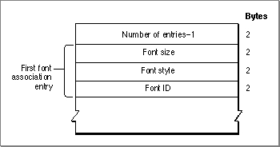

Legacy Document
Important: The information in this document is obsolete and should not be used for new development.
Important: The information in this document is obsolete and should not be used for new development.


The Font Association Table
The font association table of the font family resource maps a point size and style into
a specific font that is part of the family. This table is represented by thefontAssocfield
of the font family resource. This table, which is shown in Figure 4-24, matches a given
font size and style combination with the resource ID of a'FONT', bitmapped, or
outline resource.Figure 4-24 The font association table
 The font association table consists of an integer count and a variable number of font association entries. The table is represented by the
FontAssocdata type, which is shown on page 4-43.
Each font association entry is represented by the
- Number of entries. An integer value that specifies the number of font association records in this table minus 1. This value is represented by the
numAssocfield in theFontAssocdata type.
AsscEntrydata type, which is shown on page 4-43. The Font Manager looks first for outline font resources, then bitmapped font resources, then'FONT'resources. Entries are sorted according to point size, with the smallest sizes coming first in the table. The font size value for outline font resources is 0, so they are always listed first. Plain fonts are sorted before styled fonts. The elements of each entry are:
- Font size. This integer value specifies the size of the font in points. This value is represented by the
fontSizefield of theAsscEntrydata type.- Font style. This integer value specifies the style code of the entry, as shown in Figure 4-23 on page 4-89. This value is represented by the
fontStylefield of theAsscEntrydata type.- Font ID. This integer value specifies the resource ID of the related
'sfnt','NFNT', or'FONT'resource. This value is represented by thefontIDfield of theAsscEntrydata type.
- Note
- Bits 8 and 9 of the
fontStylefield of the font association table entry specify the font depth. They need to contain the same values as bits 2 and 3 of thefontTypefield of the font resource that this entry describes.